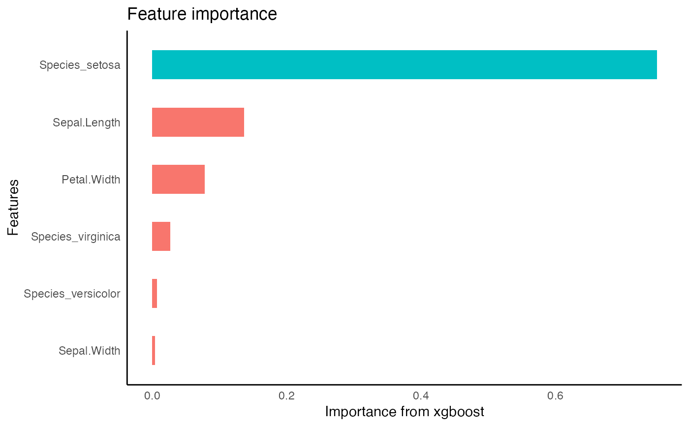

Accepts a formula to run an xgboost model. Automatically determines whether the formula is for classification or regression. Returns the xgboost model.
tidy_xgboost(
.data,
formula,
...,
mtry = 0.75,
trees = 500L,
min_n = 2L,
tree_depth = 7L,
learn_rate = 0.05,
loss_reduction = 1,
sample_size = 0.75,
stop_iter = 15L,
counts = FALSE,
tree_method = c("auto", "exact", "approx", "hist", "gpu_hist"),
monotone_constraints = 0L,
num_parallel_tree = 1L,
lambda = 0.1,
alpha = 0.1,
scale_pos_weight = 1,
verbosity = 0L,
validate = TRUE
)dataframe
formula
additional parameters to be passed to set_engine
# Randomly Selected Predictors (xgboost: colsample_bynode) (type: numeric, range 0 - 1) (or type: integer if count = TRUE)
# Trees (xgboost: nrounds) (type: integer, default: 15L)
Minimal Node Size (xgboost: min_child_weight) (type: integer, default: 1L); [typical range: 2-10] Keep small value for highly imbalanced class data where leaf nodes can have smaller size groups. Otherwise increase size to prevent overfitting outliers.
Tree Depth (xgboost: max_depth) (type: integer, default: 6L); Typical values: 3-10
Learning Rate (xgboost: eta) (type: double, default: 0.3); Typical values: 0.01-0.3
Minimum Loss Reduction (xgboost: gamma) (type: double, default: 0.0); range: 0 to Inf; typical value: 0 - 20 assuming low-mid tree depth
Proportion Observations Sampled (xgboost: subsample) (type: double, default: 1.0); Typical values: 0.5 - 1
# Iterations Before Stopping (xgboost: early_stop) (type: integer, default: 15L) only enabled if validation set is provided
if TRUE specify mtry as an integer number of cols. Default FALSE to specify mtry as fraction of cols from 0 to 1
xgboost tree_method. default is auto. reference: tree method docs
an integer vector with length of the predictor cols, of -1, 1, 0 corresponding to decreasing, increasing, and no constraint respectively for the index of the predictor col. reference: monotonicity docs.
should be set to the size of the forest being trained. default 1L
[default=1] L2 regularization term on weights. Increasing this value will make model more conservative.
[default=0] L1 regularization term on weights. Increasing this value will make model more conservative.
[default=1] Control the balance of positive and negative weights, useful for unbalanced classes. if set to TRUE, calculates sum(negative instances) / sum(positive instances). If first level is majority class, use values < 1, otherwise normally values >1 are used to balance the class distribution.
[default=1] Verbosity of printing messages. Valid values are 0 (silent), 1 (warning), 2 (info), 3 (debug).
default TRUE. report accuracy metrics on a validation set.
xgb.Booster model
In binary classification the target variable must be a factor with the first level set to the event of interest. A higher probability will predict the first level.
reference for parameters: xgboost docs
options(rlang_trace_top_env = rlang::current_env())
# regression on numeric variable
iris %>%
framecleaner::create_dummies(Species) -> iris_dummy
#> 1 column(s) have become 3 dummy columns
iris_dummy %>%
tidy_formula(target= Petal.Length) -> petal_form
iris_dummy %>%
tidy_xgboost(
petal_form,
trees = 20,
mtry = .5
) -> xg1
#> accuracy tested on a validation set
#> # A tibble: 4 × 2
#> .metric .estimate
#> <chr> <dbl>
#> 1 ccc 0.663
#> 2 rmse 1.38
#> 3 rsq 0.966
#> 4 smape 32.4

xg1 %>%
tidy_predict(newdata = iris_dummy, form = petal_form) -> iris_preds
#> created the following column: Petal.Length_preds_xg1
iris_preds %>%
eval_preds()
#> # A tibble: 3 × 5
#> .metric .estimator .estimate model target
#> <chr> <chr> <dbl> <chr> <chr>
#> 1 ccc standard 0.674 xg1 Petal.Length
#> 2 rmse standard 1.36 xg1 Petal.Length
#> 3 rsq standard 0.982 xg1 Petal.Length